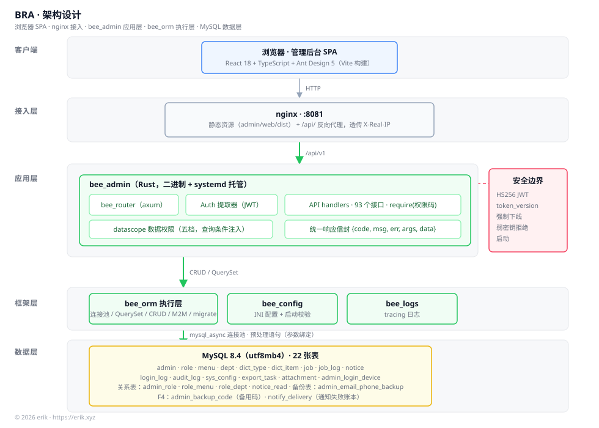
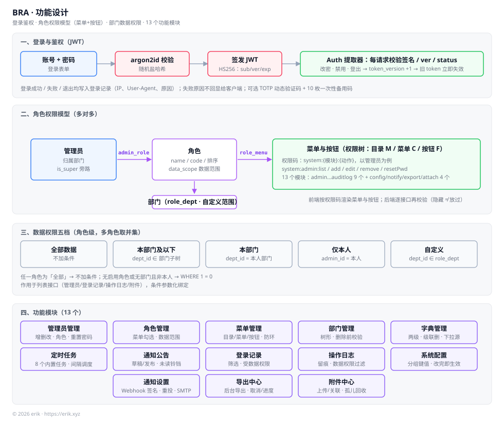
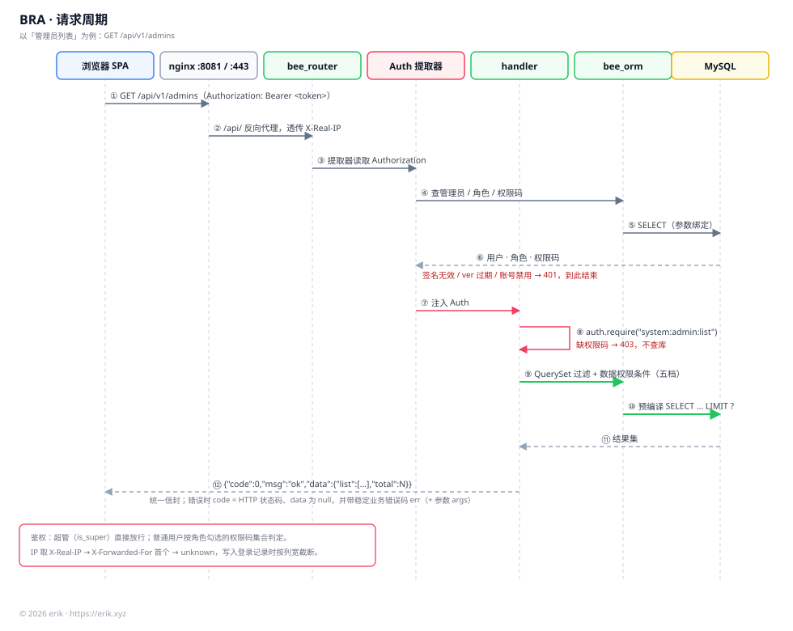
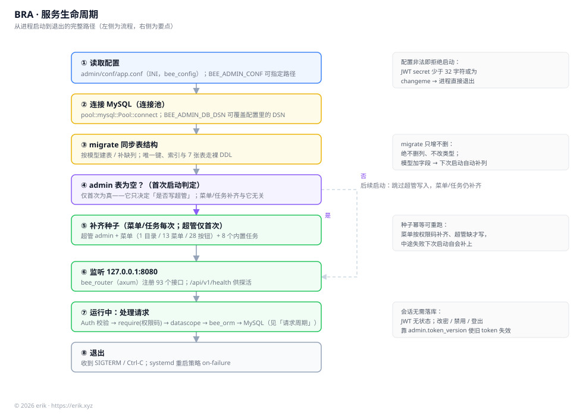

菜单 + 按钮两级权限
管理员 ← 角色 ← 菜单与按钮；超管旁路权限码。前端隐藏只是体验，后端每次再校验。
admin_rolerole_menurequire()项目介绍
它解决的问题很实际：权限要细到按钮、数据要看得到范围、登录要留痕。前端隐藏只是体验，后端每个接口还会再校验一次；列表查询在数据层注入范围条件，参数化绑定，不拼接用户输入。
服务端用本仓库的 bee-rust 框架写就（axum 路由 + 自研 ORM 执行层 + INI 配置），前端是 Vite + React 18 + Ant Design 5 单页应用，两者通过统一的 {code, msg, data} 契约对接。
启动即完成建表与种子：超管、菜单权限树、8 个内置任务自动就位；升级只加列，不删列、不改类型。
角色勾到按钮级权限码，如 system:admin:resetPwd；前端渲染菜单，后端逐接口校验。
全部 / 本部门及以下 / 本部门 / 仅本人 / 自定义；多角色取并集，一个启用的角色都没有就什么都不给看。
JWT 携带 token_version：改密、禁用、登出即失效旧令牌，不依赖黑名单。
登录成功 / 失败 / 退出，以及所有有副作用的操作都入库；四类编辑额外记录字段变更摘要。
功能设计
从门岗到账本，从数据通道到通知出口。每个模块都带着自己的权限码与审计路径。
管理员 ← 角色 ← 菜单与按钮；超管旁路权限码。前端隐藏只是体验，后端每次再校验。
admin_rolerole_menurequire()列表查询层注入部门子树、本人或自定义部门条件；多角色取并集，不拼接用户输入。
datascoperole_deptJWT 携带版本号；改密、禁用、登出即让旧令牌失效。退出其他设备一键生效。
token_versionjwt-rust登录记录、操作日志、变更摘要；32 个攻击特征检测器，默认只留痕，可切到拦截。
login_logaudit_logsecurity-rust密码验过之后才提示要码；10 枚一次性备用码只存哈希；密钥加密落库，设备列表可踢单台。
RFC 6238AES-256-GCMbackup_code8 个代码注册的内置任务：备份、附件清理、通知重投、导出执行；固定间隔调度，可手动补跑。
jobjob_logdb_backupCSV 导入单事务全有或全无；导出中心异步执行、按代次命名；附件分片上传、内容去重、孤儿回收。
importexportattach事件通知带 HMAC-SHA256 签名；失败退避重投、落账本；发送时再次封禁内网地址，不跟随重定向。
notice.publishedaccount.lockedSMTP界面两套文案、错误码查表；登录页与页脚的副标题、版权、项目地址读公开配置，刷新即变。
i18nconfigs/public架构设计
浏览器 → nginx → bee_router → Auth 提取器 → handler → bee_orm → MySQL。401 与 403 在查库之前就短路。

客户端 SPA · nginx :8081 · bee_admin · bee_orm / bee_config / bee_logs · MySQL 8.4（22 张表）。

三段式权限模型：管理员 ← admin_role → 角色 ← role_menu → 菜单与按钮；角色 ← role_dept → 部门用于自定义数据范围。

以 GET /api/v1/admins 为例的 12 步链路；校验签名、版本与账号状态后加载角色与权限码，再进入 handler。

配置强度校验 → 连接 MySQL → migrate::sync 只建表 / 加列 → 幂等补齐超管、菜单与任务 → 监听 127.0.0.1:8080 → SIGTERM 退出。
功能迭代
2026 年 10 月的连续迭代：先守住门，再补数据通道，最后做工程化收口。
完整 RBAC 后台、bee_orm 执行层、React SPA 与部署产物；建库即用。
操作日志、导出、个人中心、登录锁定、暗色主题；配置与开关不再「骗人」。
登录限流、数据权限写路径、反自我提权、首屏减重 693 kB；错误边界不再白屏。
字典、定时任务、通知公告，以及完整的中英双语界面。
bee-rust 升级到 1.2.3，ORM 换实现；对外 HTTP 契约不变。
雪花 ID + hashids、jwt-rust、加密列、登录验证码、分片头像、安全扫描与接口文档站。
仪表盘、系统配置、备份 / 导入 / 导出、TOTP + 登录设备、通知渠道、附件中心、模块脚手架。
500 行拆分、API 版本化目录、TOTP 备用码、Webhook 签名与重投、安全加固，以及项目静态站点。
项目宠物 · 阿守
蜂巢的值守蜂：查凭证、发钥匙、登记访客。五种状态跟着项目状态切换，十二种表情跟着你点。
 值守
值守(⌐■_■)门岗正常，权限表与菜单树一致
查证(・_・)?有变更待验证，凭证拿来
超管(＾▽＾)超管入场，旁路所有权限码
打盹(-_-)zZ深夜，无人来访
竖针(#°益°)仓库里检出密钥文件
当前形态：笑
点小图放大；点图片下方的名字切换形态。每个 SVG 自带表情、情绪特效与整体动效，并遵循 prefers-reduced-motion。
快速开始
预编译产物需要 glibc ≥ 2.38；老机器用源码构建或 Docker，脚本会在写盘前检测并给出替代命令。
git clone --depth 1 https://github.com/erikwang2013/bee-rust-admin.git[db] dsn、[jwt] secret 与 [app] encrypt_key（后者不可更换）。cargo run -p bee_admin，再 cd admin/web && pnpm i && pnpm dev。脚本会拉发布产物或源码构建，生成配置、建库、装 systemd + nginx，并跑自检。
# 交互式；--help 看全部参数
git clone --depth 1 \
https://github.com/erikwang2013/bee-rust-admin.git
cd bee-rust-admin
less install.sh && bash install.sh
老机器：bash install.sh --mode build；容器：./compose-up.sh --build。
支持项目
如果 BRA 帮你省了时间，欢迎随缘打赏。二维码点一下可放大。

打赏完全自愿，不影响项目许可与功能。